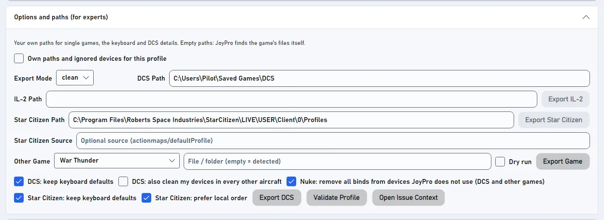

Star Citizen захоўвае ўсё ваша кіраванне ў адным файле, actionmaps.xml, і нумаруе вашы ручкі як слоты joystick ад js1 да js8. JoyPro чытае прывязкі карабля з гэтага файла ў ваш профіль і запісвае іх назад на месцы: змяняюцца толькі дзеянні карабля і іх налады восяў, кожны іншы радок застаецца такім, як яго запісала гульня. Прылада захоўвае слот, які гульня ёй ужо дала, таму вашы прывязкі не пераскокваюць з адной ручкі на іншую.
Star Citizen напрамую (уласныя файлы прывязак)
- Падтрымка
- напрамую (уласныя файлы прывязак)
- Каманда рухавіка
engine starcitizen- Файл прывязак
LIVE\user\client\0\Profiles\default\actionmaps.xml+attributes.xml(XML)- Спіс каманд з
Data.p4k(defaultProfile.xml) і вашы профілі- Праверка ў гульні
- 54/54 крокаў пройдзена (2026-10-10)
- ✓ Імпарт
- ✓ Экспарт
- ✓ Прывязкі клавіятуры
- ✓ Мадыфікатары
- ✓ Спіс каманд, пабудаваны на вашым ПК
- ✓ Назіральнік за гульнямі
- ✓ Крывыя восяў і мёртвыя зоны
- ✓ Налады кіравання ў гульні
- ✗ Налады зваротнай сувязі па сіле ў гульні
- ✗ Зваротная сувязь па сіле з тэлеметрыі
- ✗ Запіс тэлеметрыі
- ✓ Віртуальны joystick (vJoy)
- ◐ Віртуальны пульт Xbox
- ✓ Віртуальныя функцыі
- ✓ Майстар налады / Auto Assign
- ✓ Кабіны
- ✓ Шпаргалкі
- ✓ Праверка ў гульні
З матрыцы падтрымкі, створанай з кода рухавіка: усе гульні.
#Запуск за 3 крокі
- Наладзіць усё за мяне
на старонцы «Старт» - Выкарыстаць гэтыя кнопкі
спачатку паглядзіце спіс - Запісаць у маю гульню
Star Citizen павінна быць закрыта
Да: падключыце ўсе прылады, якімі карыстаецеся.
Потым: вашы прывязкі знаходзяцца ў Options > Controls.
Вы раней ужо прывязвалі кнопкі ў Star Citizen? Тады старонка «Старт» прапануе Імпартаваць, потым запоўніць прабелы. Вашы прывязкі застаюцца, і новыя функцыі атрымліваюць толькі вольныя кнопкі. Гл. Хуткі старт: каб мая ручка запрацавала.
#Што JoyPro робіць для Star Citizen
- Імпарт: вашы прывязкі карабля на ручках кіравання, РУД і педалях трапляюць у ваш профіль разам з іх мёртвымі зонамі, крывымі і інверсіямі. Уласныя прывязкі joystick гульні па змаўчанні на js1 таксама трапляюць, каб пазнейшы экспарт іх не страціў.
- Сувязі: адна сувязь — гэта адна функцыя ва ўсіх гульнях. «Landing gear» можа быць адным і тым жа пераключальнікам у Star Citizen, DCS і Elite Dangerous.
- Экспарт: JoyPro рэдагуе
actionmaps.xmlна месцы. Прывязкі пешага рэжыму, тэхнікі і меню, мышы і геймпада застаюцца як ёсць.
#Імпарт вашых прывязак Star Citizen
- Адкрыйце Старт. Калі картка Star Citizen просіць спіс каманд, націсніце Пабудаваць спіс: JoyPro чытае дзеянні гульні з вашай усталёўкі (
Data.p4k, толькі чытанне). Пасля патча гульні Абнавіць на картцы дадае новыя дзеянні. - Націсніце Імпарт на картцы Star Citizen. Пакіньце Дадаць у мой профіль. Стаўце птушку Браць таксама клавішы клавіятуры толькі калі хочаце мець свае клавішы карабля і ў JoyPro.
- Націсніце Імпартаваць зараз. Паглядзець мае сувязі адкрывае тое, што было імпартавана.


#Стварэнне і праверка сувязей
Кожнае дзеянне карабля — адзін запіс у сувязі. Аб'яднайце тую ж функцыю іншых вашых гульняў з дапамогай працэсу сувязей, потым націсніце Праверыць на старонцы «Экспарт»: праверка знаходзіць кнопку, якая робіць на вашым караблі дзве рэчы, раней, чым гэта зробіць гульня.
#Экспарт у Star Citizen
- Закрыйце Star Citizen. Гульня перазапісвае
actionmaps.xmlпры выхадзе, таму JoyPro адмаўляецца запісваць, пакуль яна працуе. - Адкрыйце Экспарт і пастаўце птушку на картцы Star Citizen.
- Пакіньце Замяніць на маіх прыладах разам з Ачысціць і іншыя мае прылады, калі вы наладжваеце свае ручкі ў JoyPro. Націсніце Экспартаваць зараз на картцы.


Запусціце гульню і адкрыйце Options > Controls з галоўнага меню. Выберыце сваю прыладу (Joystick / HOTAS 1, 2 ...): яе мёртвая зона і насычэнне — тыя, што вы задалі ў JoyPro; Inversion Settings і Joystick Sensitivity Curves (Flight > Flight Movement) паказваюць вашы інверсіі, экспаненты і крывыя. Вашы прывязкі карабля стаяць на слоце joystick кожнай прылады. Налады гульні па змаўчанні, якія JoyPro выключыў, паказваюцца пустымі. Меню паказвае насычэнне на 0.01 больш, чым захоўвае файл (0.87 паказваецца як 0.88); гульня захоўвае дакладнае значэнне.
#Што вы робіце самі ў Star Citizen
- Для прывязак больш нічога не трэба. Падключыце ўсе прылады, якімі карыстаецеся, перад экспартам: прылада, якая не падключана, захоўвае свой слот і свае прывязкі, але JoyPro не можа даць ёй новыя.
- Калі гульня знаходзіцца не ў той папцы, што была знойдзена, адзін раз задайце шлях на старонцы «Экспарт» у Параметры і шляхі (для экспертаў) або падключыце папку ў Налады > Гульні.
#Тыповыя памылкі
- «Star Citizen працуе»: выйдзіце з гульні (таксама з лаўнчара) і экспартуйце зноў.
- Прывязкі трапілі не на тую ручку кіравання: пакіньце SC: аддаваць перавагу лакальнаму парадку уключаным (так па змаўчанні). Калі выключыць, слоты ідуць у тым парадку, у якім Windows паведамляе пра прылады, і ўсе прывязкі прылады могуць пераехаць на іншы нумар js.
- Прылада не атрымала слот: у гульні восем слотаў для джойсцікаў. JoyPro аб'ядноўвае дублікаты адной ручкі кіравання (назву ў гульні і назву ў JoyPro) у адзін слот, але больш за восем падключаных прылад з прывязкамі не змясціцца.
- Прывязка па змаўчанні вярнулася на js1: яна вяртаецца, калі прылада на js1 не падключана падчас экспарту. Падключыце яе і экспартуйце зноў з «Замяніць».
#Файлы, якія JoyPro чытае і запісвае
| Файл | Што гэта |
|---|---|
<install>\LIVE\user\client\0\Profiles\default\actionmaps.xml |
вашы перапрызначэнні, слоты джойсцікаў (<options type="joystick" instance="1..8" Product="...">), групы параметраў для кожнага слота (інверсія, паказчык ступені, крывая, адчувальнасць) і параметры прылады (мёртвая зона, насычэнне для кожнай фізічнай восі) |
...\Profiles\default\attributes.xml |
налады для ўсёй гульні (<Attr name="..." value="..."/>), толькі значэнні, якія адрозніваюцца ад значэнняў гульні па змаўчанні |
...\Profiles\default\actionmaps.jp |
копія запісанага файла ад JoyPro з назвамі сувязей у каментарыях, якую счытвае наступны імпарт |
...\Profiles\default\actionmaps.xml.joypro.json |
налады восей, якія JoyPro запісаў апошнім разам, каб «Абнавіць» магло адрозніць значэнне, якое вы змянілі ў гульні, ад свайго ўласнага |
actionmaps.xml.jpbak, attributes.xml.jpbak |
копіі з часу да першага запісу экспарту, плюс сховішча рэзервовых копій JoyPro з версіямі |
Экспарт рэдагуе actionmaps.xml на месцы: змяняюцца толькі перапрызначэнні карабля і налады восей тых перапрызначэнняў восей, якія запісвае JoyPro. Іншыя карты дзеянняў, перапрызначэнні мышы і пульта, рэжымы актывацыі, мадыфікатары, іншыя групы параметраў і параметры прылад застаюцца байт у байт. Профіль без прывязак Star Citizen пакідае файл як ёсць.
#Слоты джойсцікаў
Star Citizen называе кожную прывязку джойсціка па яе слоце: js1_button3, js2_x. Файл пералічвае, якая прылада займае які слот, па назве прадукту DirectInput і GUID прадукту прылады.
- Аддаваць перавагу лакальнаму парадку (па змаўчанні ўключана): падключаная прылада, якую файл ужо называе, захоўвае гэты слот. Іншыя прылады запаўняюць вольныя слоты ў тым парадку, у якім іх паведамляе Windows.
- Адна прылада — адзін слот: тая ж ручка кіравання, пералічаная двойчы (пад назвай гульні і пад назвай асобніка ад JoyPro, або стары другі запіс), займае адзін слот. Экспарт выдаляе дублікаты запісаў і пераносіць іх прывязкі ў слот, які захоўвае прылада. Запісы прылад, якія не падключаны, застаюцца.
- Дзве падключаныя прылады адной мадэлі застаюцца асобна.
- Прылада, якая мяняе слот, забірае з сабой свае групы параметраў (інверсія, крывыя). Прылада, якая не атрымлівае слота, губляе групы свайго старога слота, з папярэджаннем.
#Рэжымы экспарту ў Star Citizen
Кожны рэжым змяняе толькі дзеянні карабля. Карты пешага рэжыму, тэхнікі і меню застаюцца байт у байт.
| Рэжым | Што адбываецца ў гульні |
|---|---|
| Толькі дадаць | Ніводная прывязка гульні не змяняецца. Дзеянне, чый слот джойсціка ўжо мае перапрызначэнне або актыўнае значэнне па змаўчанні, захоўвае яго. Прывязка на ўваходзе, які выкарыстоўвае іншае дзеянне карабля, не запісваецца і атрымлівае пазнаку «Не запісана ў гульню». |
| Абнавіць, пакінуць прывязкі гульні | Ваш уваход трапляе ў слот джойсціка дзеяння (у Star Citizen адзін слот на дзеянне і тып уводу). Прывязка гульні на ўваходзе, які вы аддаяце іншаму дзеянню карабля, вызваляецца: яе перапрызначэнне знікае або становіцца пустым js1_ , калі ў дзеяння ёсць значэнне па змаўчанні, каб значэнне па змаўчанні не вярнулася. |
| Абнавіць, мой профіль мацнейшы | Як вышэй; з параметрам клавіятуры дзеянне, якое вы прывязваеце, таксама губляе сваё перапрызначэнне клавіятуры. |
| Замяніць на маіх прыладах | Запісаныя прылады захоўваюць толькі вашы прывязкі карабля. Калі на js1 ёсць прылада, прывязкі гульні па змаўчанні для js1, якіх няма ў вашым профілі, выключаюцца. |
| + Ачысціць і іншыя мае прылады | Падключаныя прылады без прывязак у вашым профілі губляюць свае прывязкі карабля; значэнні па змаўчанні для js1 выключаюцца, калі js1 не выкарыстоўваецца. |
Параметры на старонцы «Экспарт» (у Параметры і шляхі (для экспертаў)):
- SC: пакінуць прывязкі клавіятуры па змаўчанні (уключана): клавіятура захоўвае клавішы гульні па змаўчанні. Выключана: вашы прывязкі клавіятуры запісваюцца, а клавішы па змаўчанні, якія яны займаюць, вызваляюцца.
- SC: аддаваць перавагу лакальнаму парадку (уключана): гл. слоты джойсцікаў вышэй.



#Прывязкі джойсціка гульні па змаўчанні
У Star Citizen ёсць прывязкі джойсціка па змаўчанні, якія дзейнічаюць на js1, пакуль дзеянне не атрымае там перапрызначэнне (pitch на Y, yaw на X, roll на павароце Z, некалькі кнопак). Імпарт бярэ кожнае актыўнае значэнне па змаўчанні як прывязку прылады js1, таму ваш профіль змяшчае тое, што гульня робіць насамрэч. Экспарт не запісвае перапрызначэння для прывязкі, роўнай значэнню па змаўчанні (толькі сапраўдныя адрозненні). «Замяніць» і «Ачысціць і іншыя» выключаюць значэнні па змаўчанні, якіх няма ў вашым профілі, пустым перапрызначэннем js1_ — так уласнае меню гульні запісвае ачышчаную прывязку — і толькі калі прылада на js1 падключана. Таму імпарт, а потым «Замяніць» + «Ачысціць і іншыя» пакідаюць actionmaps.xml такім, якім ён быў.
#Што ніколі не змяняецца
- Прывязкі пешага рэжыму, наземнай тэхнікі і меню (наземная тэхніка Star Citizen лічыцца асобным класам транспарту).
- Прылады, якія не падключаны: яны захоўваюць свой слот і свае перапрызначэнні.
- Прылады, што імпарт ігнаруе, і прылада vJoy, у якую JoyPro перадае сігналы.
- Прывязкі мышы і пульта; клавіятура, калі вы не экспартуеце прывязкі клавіятуры.
- Рэжымы актывацыі, мадыфікатары, іншыя групы параметраў і параметры прылад.
#Караблі, крывыя, налады гульні
- Дэталізацыя: адзін набор прывязак карабля для ўсіх караблёў (у гульні няма прывязак для асобных караблёў).
- Крывыя восей, у двух месцах, як іх захоўвае гульня: мёртвая зона і насычэнне для кожнай прылады і фізічнай восі; інверсія, паказчык ступені (ад 1 да 3), крывая з 11 кропак і адчувальнасць для кожнага слота і групы параметраў. Паказчык ступені і крывая выключаюць адно аднаго, як у меню гульні. Сувязь без значэнняў Star Citizen атрымлівае падагнаную крывую JoyPro: мёртвая зона і насычэнне ідуць на вось прылады, выгін становіцца найбліжэйшым паказчыкам ступені, а калі ніводзін паказчык не падыходзіць — крывой. Аднабаковай восі няма: абсалютны і адносны РУД гульні — асобныя дзеянні.
- Абнавіць захоўвае значэнне восі, якое вы змянілі ў гульні (з папярэджаннем); Замяніць і мой профіль мацнейшы ставяць значэнні вашага профілю. Нейтральная сувязь пакідае ўласнае значэнне гульні (вольны агляд захоўвае свой паказчык ступені па змаўчанні 2.5).
- Налады для ўсёй гульні (
attributes.xml): пераключэнне інверсіі цягі HOTAS, час і парог пасткі адноснага РУД, мадыфікатары адчувальнасці IFCS, ESP (уключэнне, сіла і дэмпфаванне), ESP турэлі, налады палёту па змаўчанні (sticky throttle, абмежавальнік хуткасці, coupled, G-safe, auto precision, space brake), інверсія кантролера палёту і Vibration. Задайце іх у Налады > Налады зваротнай сувязі па сіле гульняў (выберыце Star Citizen) або празengine ffb set. JoyPro змяняе на месцы толькі радкі, якія вы задалі, і не стварае файл. Паўзунок сілы ESP заканчваецца на 1.00, таму JoyPro прапануе ад 0 да 1. - Зваротная сувязь па сіле: няма. Vibration — адзіная такая налада гульні.
- Назіральнік: прывязку або значэнне восі, якое вы змянілі ў меню гульні, JoyPro заўважае пасля закрыцця гульні і пытаецца, ці пераняць яго. Ён параўноўвае
actionmaps.xml(толькі карты дзеянняў карабля) і налады, якія JoyPro захоўвае ўattributes.xml. - HUD: HUD знаходзіць гульню па яе працэсе і паказвае вашы прывязкі Star Citizen.
#Унутры інтэграцыі Star Citizen
flowchart LR
A[("actionmaps.xml")] --> S["Слот на прыладу"]
D["Падлучаныя прылады"] --> S
P["Ваш профіль"] --> E["engine starcitizen export"]
S --> E
E --> X["actionmaps.xml"]
E --> T["attributes.xml"]
X --> G["Options ><br/>Controls"]
Код: engine\EngineStarCitizen.cs, engine\EngineStarCitizenTuning.cs, мадэль восі engine\AxisModels\StarCitizen.cs і мадэль налад engine\FfbModels\StarCitizen.cs.
- Назвы прылад:
Productслота — гэта назва прадукту DirectInput і GUID прадукту праз два прабелы (vJoy Device {BEAD1234-0000-0000-0000-504944564944}). Слот або блокdeviceoptions, запісаны пад іншай назвай (GUID асобніка), гульня не распазнае: яна перапісвае слот са сваім прадуктам і адкідае групы параметраў слота. Таму JoyPro запісвае назву прадукту падключанай прылады. - Спіс каманд:
engine db refresh-starcitizenчытаеData\Libs\Config\defaultProfile.xmlзData.p4k(або з распакаванай копіі праз--source) уDB\StarCitizen\AllBinds.xml: кожнае дзеянне з яго групай параметраў, дрэва параметраў джойсціка (бацькоўскія групы і значэнні па змаўчанні, якія групы паказваюць крывую) і ўваход джойсціка па змаўчанні для дзеяння.engine starcitizen labelsбярэ назвы элементаў кіравання гульні зglobal.ini. - Імпарт:
engine starcitizen import(--include-keyboard,--device,--ignore-device); кожнае перапрызначэнне восі атрымлівае значэнні, якія выкарыстоўвае гульня (канцавая група слота, інакш найбліжэйшая бацькоўская група, якую вы задалі, інакш значэнне гульні па змаўчанні), і параметры прылады для яе восі як сваю наладуgame:StarCitizen.engine starcitizen scanпаказвае тое ж самае без змены профілю;engine starcitizen list-devicesпералічвае слоты джойсцікаў у файле. - Экспарт:
engine starcitizen export--mode clean|add|merge|merge-overwrite --nuke-untouched-devices true|false --keep-keyboard-defaults true|false --prefer-local-order true|false --include-keyboard true|false --ignore-device <d>. Новы блокdeviceoptionsставіцца перад першым<options>; некалькі сувязей на адной групе параметраў або адной фізічнай восі з рознымі значэннямі даюць папярэджанне, і перамагае першая сувязь па назве. - Налады гульні:
engine ffb set --device * --game StarCitizen --param <Attr name>=<value>; існуючы радок атрымлівае значэнне, новы ставіцца на сваё месца ў сартаваным парадку. - Рэзервовыя копіі:
engine backups listпералічвае копіі; Адмяніць апошні экспарт на картцы аднаўляе самую новую.
#Вядомыя абмежаванні
- Восем слотаў джойсцікаў; абмежаванне кнопак на прыладу невядомае (крыніцы супярэчаць адна адной).
- Дзе гульня хоча бачыць новы блок
deviceoptions, інтэрпаляцыя крывой (меню малюе гладкі сплайн праз кропкі), дыяпазон паказчыка ступені і ці дзейнічае адчувальнасць на джойсцікі, пакуль не пацверджана. Дыяпазонаў налад для ўсёй гульні няма ў файлах гульні, якія можна прачытаць. - Ці кіруе Vibration ручкай кіравання са зваротнай сувяззю па сіле праз DirectInput, пакуль не пацверджана.
- Тэсты:
engine\tests\smoke\starcitizen.ps1(абнаўленне каталога, імпарт груп параметраў і крывых, імпарт + экспарт байт у байт, кожная налада восі, канфлікты, змены слотаў,attributes.xmlна месцы); у гульніtools\e2e\games\StarCitizenSettings.ps1(Options галоўнага меню: налады, прывязкі і крывыя) іtools\e2e\games\StarCitizen.ps1(матрыца рэжымаў экспарту і імпарту).
Усе тэхнічныя нататкі пра гэту гульню (створаны з рэпазіторыя): starcitizen.md.